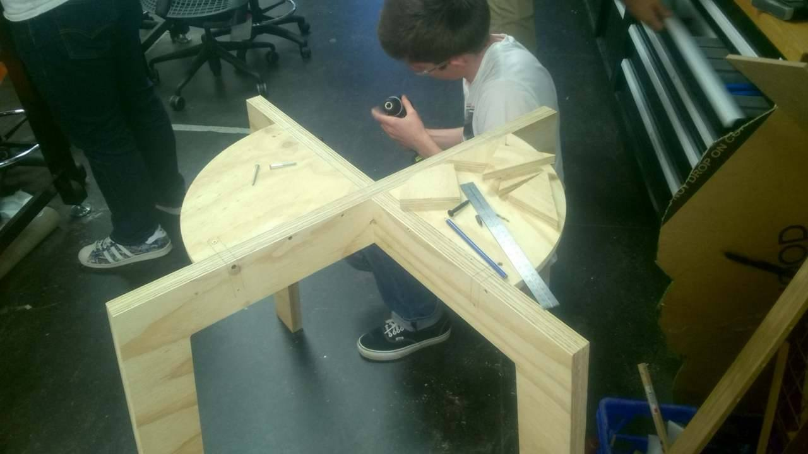
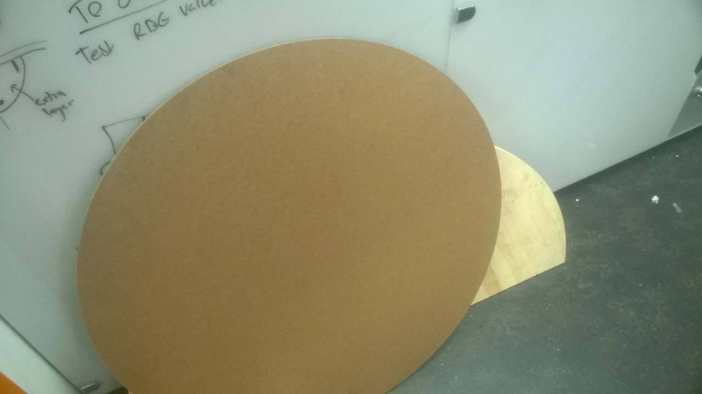
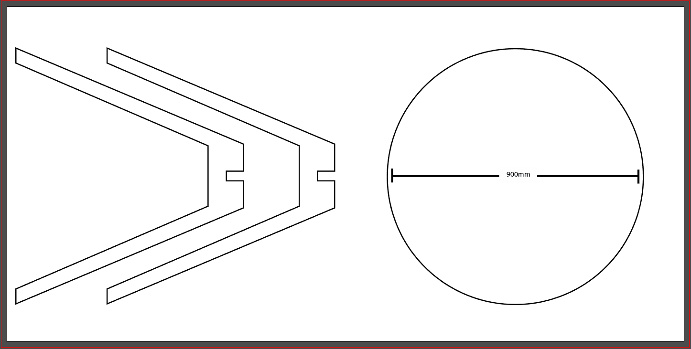
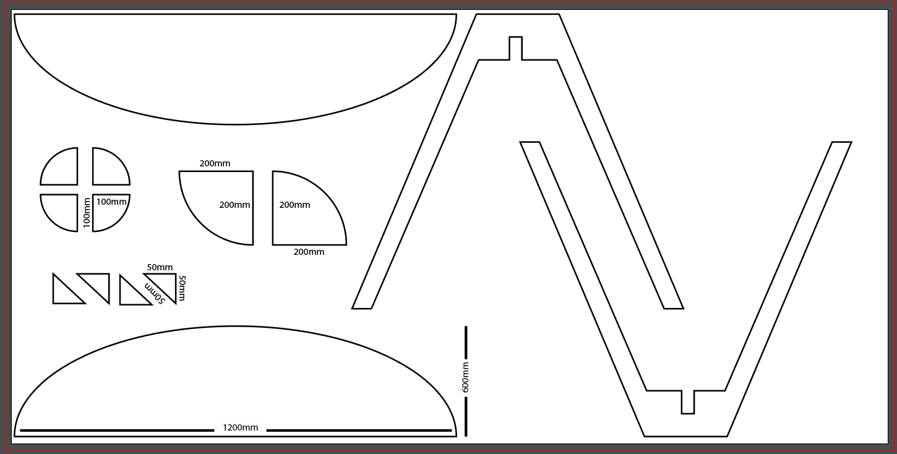

When we formed Broken Chords, we were formed due to the fact we wanted to work with the space of new interfaces for musical expression along with the problem space of early learning. During our first meeting we had ideated several ideas which revolved around the idea of allowing people to collaborate together creating music and we also had a very strong focus that what we wanted to build was for non-musicians as we had long discussions of how difficult it can be for people at any age to learn an instrument. While having these ideas and concepts in mind we had iterated our concept to a table in which allowed people to draw whatever they wanted and it played sound according to what coloured marker they were using.   We had several iterations with this core concept of drawing then having audio feedback and through much research we have seen that this sort of concept has been done before and so we had confidence in moving forward with the concept. Our concept changed constantly due to trying to balance how we wanted to build it internally which was the coding side along and making that internal design complement the physical design of our concept. While we were in our early stages of designing our physical build we had several ideas on what sort of table we wanted for example we first started with a curved semi-circle like table and then we moved to a full round table and from a design perspective having a round table seemed more inviting than having a standard rectangular table and of course our main goal was to push collaboration. Another part of designing our concept is that we had different variations on how the table worked. It began with little webcams sitting on the table capturing users drawings and having a projector below the table to project visuals of users compositions. We thought about how people would draw on the table would they use a physical coloured marker or would they be using a digital marker for example using a Wii remote to represent a pen or brush for users to use. We came to the conclusion that we would allow users to use physical markers to use and draw on the our table and also have a webcam above that would take snapshots of the table and convert user drawings into music with the help of a pre existing music making software called Ableton.
 How It Works In terms of the physical build we had a discussion with the people over at UQ Architecture department and they aided us in designing our table and we had provided the measurements of the physical table as seen above. When getting the physical table done there were several factors we had to consider. The biggest factor was to design the table in a way that it kept our core goals in mind as well as making it portable. Therefore the way the table was cut and the drill holes were purposly placed in a way that it made it easy for us to detach the table and rebuild it in a easy and fast manner.